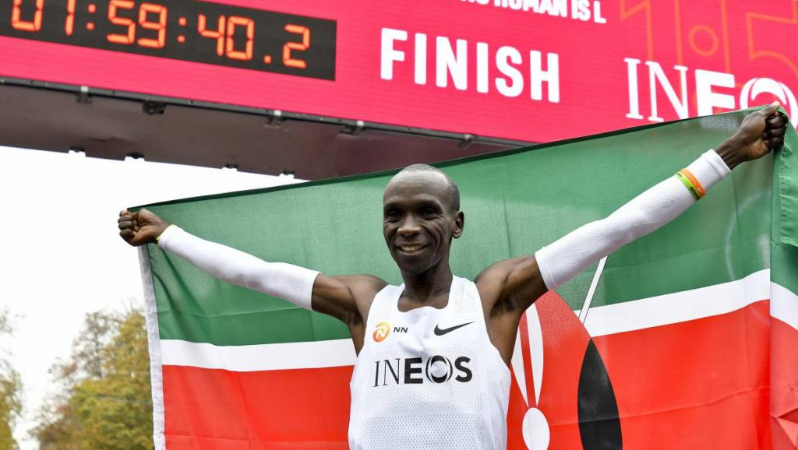

Eliud Kipchoge
The greatest marathoner of the modern era

Eliud Kipchoge celebrating his under 2 hour marathon run in Vienna, Austria, October 12th, 2019.
Here's a timeline of Kipchoge's marathon career:
- September 1st, 2012 - Made his half marathon debut in the Lille Half Marathon. The run was won by a new course record time of 59:05 from Ezekiel Chebii, trailed by Bernard Koech with 59:10, while Kipchoge earned a third place with 59:25
- October 6th, 2012 - Ran in the 2012 IAAF World Half Marathon Championships in Kavarna Bulgaria. Zsersenay Tadese of Eritrea won in 1:00:19 and Kipchoge placed sixth in 1:01:52
- February 17th, 2013 - Opened his 2013 season with a win at the Barcelona Half Marathon in a time of 1:00:04
- April 21st, 2013 - Making his marathon debut in April, he demonstrated a smooth transition to the longer distance by taking the Hamburg Marathon title with a run of 2:05:30—beating the field by over two minutes and setting a new course record
- August 18th, 2013 - Won the Half Marathon of Klagenfurt in 1:01:02
- September 29th, 2013 - Raced in the Berlin Marathon and he finished second in 2:04:05, the fifth-fastest time in history, in his second ever marathon, behind Wilson Kipsang, who set a new marathon world record with 2:03:23
- February 2nd, 2015 - Participated in the Ras al-Khaimah Half Marathon. He placed sixth with a time of 1:00:05. The run was won by Mosinet Geremew in 1:00:05
- April 26th, 2015 - Won the London Marathon in 2:04:42
- September 27th, 2015 - Won the Berlin Marathon. His win and then-personal-best time (2:04:00) occurred even though his shoes malfunctioned, causing his insoles to flap out of both shoes from 10km onward; rather than risk time lost from an adjustment, he finished the race with bloodied, blistered feet
- April 24th, 2016 - Won the London Marathon for the second consecutive year in a time of 2:03:05. His performance broke the course record in London, and became the second-fastest marathon time in history, missing Dennis Kimetto's world record by 8 seconds
- August 21st, 2016 - As the prerace favorite, during the 2016 Summer Olympics, Kipchoge gained a gold medal in the marathon event. On the last day of the Rio Olympics he won in a time of 2:08:44. Kipchoge's winning time is his slowest marathon time (As of Jan 2020)
- November 20th, 2016 - Ran in the Airtel Delhi Half Marathon, winning the race clocking a time of 59:44
- May 6th, 2017 - Kipchoge, along with Zersenay Tadese and Lelisa Desisa, attempted the first sub-two-hour assisted marathon, in the Nike Breaking2 project on the Monza Formula 1 racetrack near Milan, Italy. Kipchoge finished in 2:00:25, while the other two had to slow and finished far behind
- September 24th, 2017 - Won the Berlin Marathon in a time of 2:03:32. In rainy conditions, he finished 14 seconds ahead of Guye Adola who ran his first marathon
- April 22nd, 2018 - Won the London Marathon against a field that included Mo Farah, who finished third with a time of 2:06:32 in his second marathon, Kenenisa Bekele, and defending champion Daniel Wanjiru. He won in a time of 02:04:17
- September 16, 2018 - Won the Berlin Marathon in a time of 2:01:39, breaking the previous world record by 1 minute and 18 seconds. It was the greatest improvement in a marathon world record time since 1967
- April 28th, 2019 - Won the 2019 London Marathon in a time of 2:02:37, the second fastest marathon of all time, behind his 2018 Berlin Marathon win. His fourth win in London marks a new course record, beating his own 2016 London Marathon record by 28 seconds
- October 12, 2019 - In Vienna's Prater park, he ran 4.4 laps of the Hauptallee in 1:59:40, successfully becoming the first person in recorded history to break the two hour barrier over a marathon distance.
No human is limited.
- Eliud Kipchoge